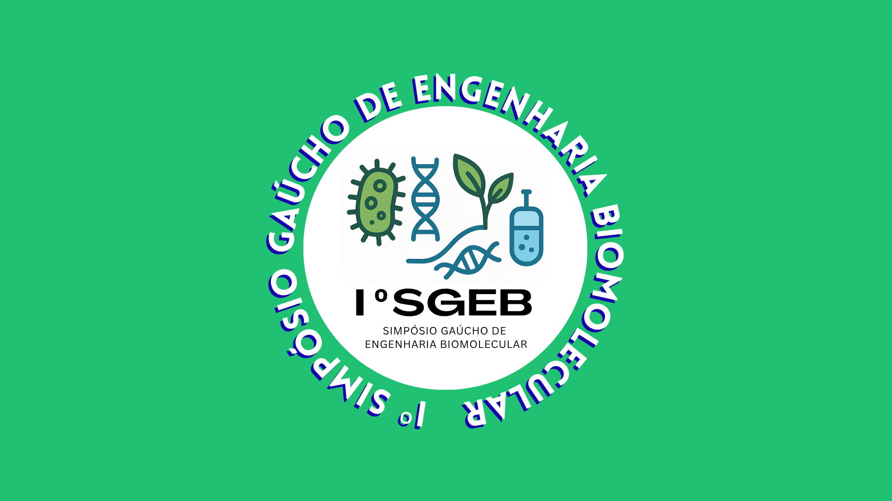
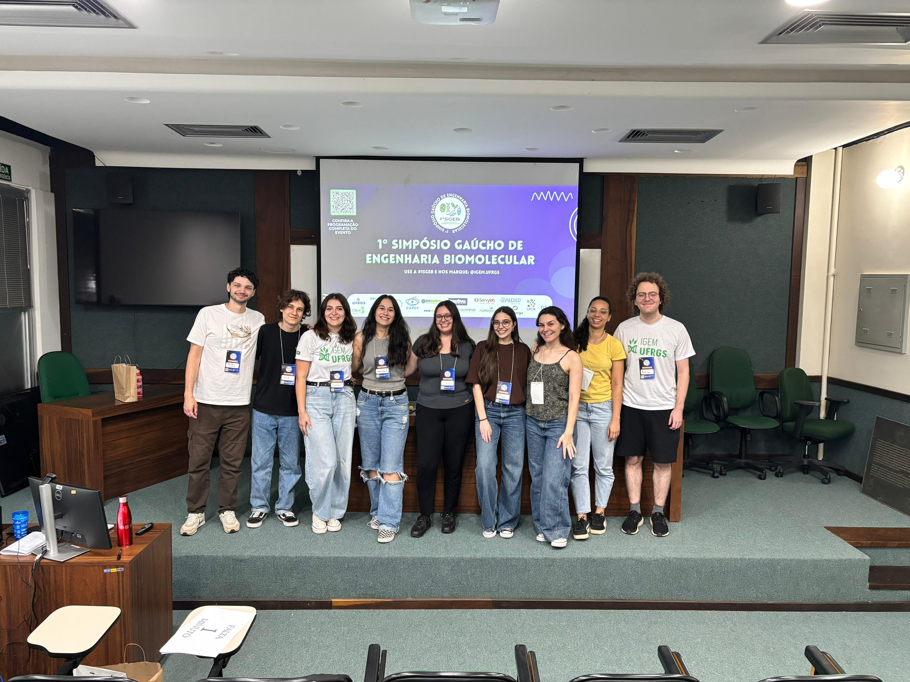
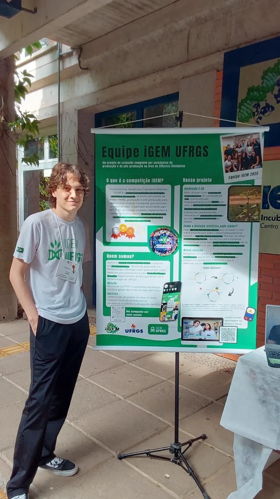
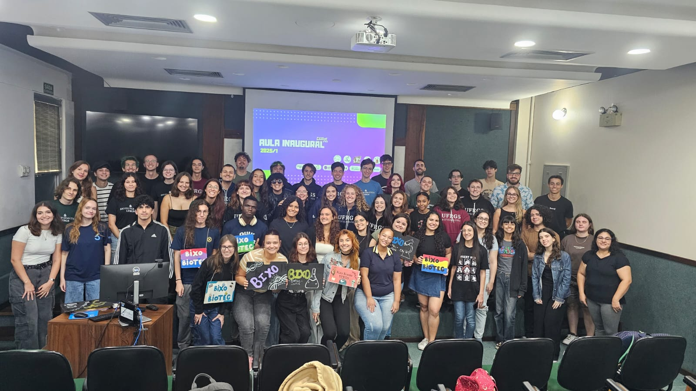
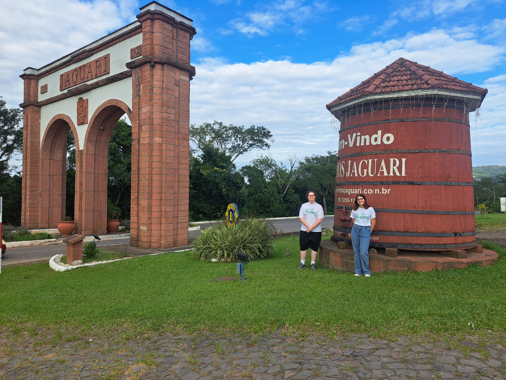

Education is the foundation of science. Without the widespread dissemination of knowledge across society, advancing would be far more difficult, as true breakthroughs invariably stem from collaboration. For the iGEM UFRGS team, education as a core principle has always been one of our strongest pillars.
This commitment naturally ties into our dedication to outreach. Brazilian federal universities are built upon an inseparable quartet: teaching, research, outreach, and innovation. Guided by these principles, we registered our team as an official outreach project at our university from the very beginning, motivating us to align our scientific journey directly with community engagement.
Consequently, educational initiatives and public engagement became central priorities for our team. Our efforts in education were structured around three key pillars:
Knowledge Dissemination: Synthetic Biology for Beginners Course
Despite the recent surge of Synthetic Biology in the media, access to educational materials remains heavily restricted by language barriers. Recognizing this gap, our team designed a pioneering initiative: an introductory, entirely Portuguese synthetic biology course offered digitally and free of charge with open access. We partnered with Lumina, UFRGS's online learning platform that provides high-quality open courses to the broader community. Discover more here.
Academic Community Integration: I Gaucho Symposium for Biomolecular Engineering
Synthetic Biology is still a largely unexplored field in Southern Brazil. To bridge this gap, we aimed to bring these discussions to our region, strengthening connections between academia, industry, and students interested in emerging areas of biotechnology. In this context, we organized the 1st Gaúcho Symposium of Biomolecular Engineering. It was an excellent opportunity for students to learn with the greatest experts in this area in Brazil. Discover more here.
Active Community Presence: Science Communication
We observed that the community’s understanding of synthetic biology was still quite shallow. Whenever we tried to introduce our project to people from outside our field, including university peers from other departments, as well as our own family and friends, they were never able to fully engage with our ideas because they simply couldn't grasp the core concepts. Therefore, from the very beginning, it was clear to us that we needed to remain active and communicative, bringing synthetic biology to the general public. To achieve this, we maintained an Instagram account with various posts about the field, our project, and the iGEM competition, and we participated in campus events that allowed us to interact with many people and engage the community. Discover more here.
Synthetic Biology for Beginners (Lumina)
Despite Synthetic Biology's transformative potential, access to learning materials remains heavily restricted by language barriers, as introductory content in Portuguese is virtually non-existent. Recognizing this educational gap, our team partnered with the Lumina platform to create the first free, open-access course dedicated to introducing Synthetic Biology to the Portuguese-speaking community.
Lumina is an online learning platform linked to the Federal University of Rio Grande do Sul (UFRGS) and it specializes in Massive Open Online Courses (MOOCs). The platform is designed to offer broad access to knowledge for a large and diverse audience free of charge. The courses are offered online on their website and they are developed by university professors, technicians and students, offering high-quality content and allowing the subscribers to study whenever and wherever they want. As a standard for MOOCs, these courses generally do not require any prerequisites and enrollment is completely open to anyone interested in the topics. Currently, Lumina has 117 courses available, divided in 5 areas of knowledge: Health and Biological Sciences (39), Exact and Earth Sciences (9), Human and Social Sciences (32), Linguistics, Languages, and Arts (11), Technology and Creative Industry (26). In that sense, Lumina serves as a powerful bridge between academic subjects and the general public.
Despite Synthetic Biology's transformative potential across healthcare, agriculture, and environmental sustainability, access to learning materials remains heavily restricted by language barriers, as introductory content in Portuguese is virtually non-existent. Recognizing this educational gap, our team designed a pioneer initiative: partnering with Lumina to create the first free, open-access course dedicated to introducing Synthetic Biology to the Portuguese-speaking community.
Titled "Synthetic Biology for Beginners," the course was designed not just to teach, but to democratize cutting-edge science. By removing prerequisites and cost barriers, we turned a specialized academic discipline into an inclusive, self-paced learning journey available to anyone, anywhere and empowering high school students, undergraduates, and curious minds.
To deliver an engaging and comprehensive learning experience, our team produced fully recorded video lectures complemented by reading materials for every module. It is structured into five modules created to guide beginners from foundational concepts to more complex discussions:
- 1. The History of Synthetic Biology (A história da Biologia Sintética): Explores the evolution of synthetic biology, tracing its historical milestones and paradigm shifts from traditional genetics to modern biological design.
- 2. Design and Construction of Biological Systems (Design e Construção de Sistemas Biológicos): Covers core engineering principles used to design, assemble and optimize artificial genetic circuits and biological pathways.
- 3. Modeling and Standardization of Genetic Parts and Devices (Modelagem e Padronização de Partes e Dispositivos Genéticos): Revisits fundamental pillars such as DNA synthesis, standardization, and abstraction, as the essential framework required to standardize biological parts and model complex systems.
- 4. Applications of Synthetic Biology (Aplicações da Biologia Sintética): Highlights real-life innovations across medicine, sustainable agriculture, environmental bioremediation, and industrial biotechnology.
- 5. Transgenics and Debates (Transgênicos e Debates): Addresses biosafety, regulatory frameworks, bioethics, and the societal discussions surrounding genetically modified organisms and emerging biotechnologies.
At the end of each module, there is a questionnaire that the student must answer to move to the following one. At the end of the course there is one last assessment. The final grade is calculated by averaging the grades obtained in the course questionnaires, with 6.0 being the minimum passing grade. Finally, the student can issue a certificate, which can be used to validate their participation in the course.
This course goes beyond education, it plants the seeds for a more accessible, inclusive, and thriving Synthetic Biology ecosystem across Brazil and Portuguese speakers!
Participation Metrics:
- XX registered participants
- XX participants who completed the program
If the document does not appear, select “Open PDF”.
1st Gaucho Symposium on Biomolecular Engineering (SGEB)
During 2025, our team organized the 1st Gaucho Symposium on Biomolecular Engineering, held on November 11th, 12th, and 13th at the Biotechnology Center Auditorium of UFRGS. The symposium was created with the vision of expanding the Synthetic Biology discussion in Southern Brazil, while strengthening connections between academia, industry, and students.

During 2025, our team organized the 1st Gaucho Symposium on Biomolecular Engineering, held on November 11th, 12th, and 13th at the Biotechnology Center Auditorium of the Federal University of Rio Grande do Sul, in Porto Alegre.
The symposium was created with the vision of expanding the Synthetic Biology discussion in Southern Brazil, while strengthening connections between academia, industry, and students interested in emerging areas of biotechnology. Recognizing that Synthetic Biology remains underrepresented in the region compared to major national centers, the event sought to bridge this gap by establishing a dedicated platform for dialogue and collaboration.
Throughout the three-day event, 18 speakers presented their work and spoke about topics in Molecular Biology, Synthetic Biology, Bioprocesses and Bioinformatics, promoting interdisciplinary dialogue and scientific dissemination.
Audience Breakdown
- Undergraduate: 69.1%
- Postgraduate: 20.0%
- Professional or Doctor: 10.9%
The SGEB gathered participants from different backgrounds. Registration was offered in different participation formats in order to increase accessibility and engagement. A total of 42 participants attended the event in person, while 33 joined through the hybrid modality and 24 participated remotely, resulting in 75 participants involved in the in-person and hybrid activities and 99 total registered participants overall.
In addition, the symposium received support from academic institutions and biotechnology companies that contributed both as sponsors and participants in the entrepreneurship session. Institutional support was provided by Programa de Pós Graduação em Biologia Celular e Molecular (PPGBCM). The event was also sponsored by Incubadora Empresarial do Centro de Biotecnologia da UFRGS (IECBiot) and companies including Agronômica, Equipal, Promega, Pró-Análise, ServyLab, Biosumos, Alesco and Exxtend. These organizations contributed to discussions on innovation, entrepreneurship and the industrial applications of biotechnology, while also helping to strengthen the connection between academia and industry.
By organizing this event, our team aimed to create a collaborative environment where participants could exchange experiences, discuss current scientific challenges, and expand their professional and academic networks. The symposium also provided students with the opportunity to interact directly with researchers and industry professionals, encouraging interest in Synthetic Biology and related fields.
Speakers and Presentation
DAY 1 (11/11/2025)
- "IGEM and Synthetic Biology in Brazil: Innovation, Education, and Social Impact" - Speaker: Dr. Diego Bonatto: Professor at UFRGS. This lecture provided a global and national overview of Synthetic Biology, explaining fundamental concepts and the practice of engineering biological systems. Challenges and advances in the field in Brazil were discussed, highlighting the intersection between research, education, innovation, and social impact. The lecture explored the role of initiatives such as iGEM in training new scientists and strengthening Latin America within the global scientific landscape.
- "Microbial Metataxonomy to Implement Technological Routes for Waste Valorization and Renewable Energy Generation" - Speaker: Dra. Suelen Paesi: Professor at University of Caxias do Sul. Explored the importance of anaerobic digestion for waste valorization and renewable energy production, highlighting the role of microbial communities and next-generation sequencing technologies.
- iGEM UFRGS Team Presentation - Speaker: Isabelli Seiler: Presented the iGEM UFRGS Team and our project: the development of a Synthetic Biology-based biosensor designed to detect and monitor 2,4-D concentrations directly on leaf surfaces.
- "Systems Biology and Lignin Biotechnology for the Bioeconomy" - Speaker: Dr. Igor Cesarino: Professor at USP. Explored the role of lignin in plant development and its economic importance, highlighting Systems Biology approaches including transcriptomics and metabolomics.
- "Human Genomics and Precision Medicine: Exploring Genetic Variability and Inborn Errors of Immunity" - Speaker: Dra. Fernanda Sales: Professor at UFRGS. Addressed the genetic variability of the Brazilian human genome, recognized as one of the most diverse in the world, and the perspectives of precision medicine.
- "Lymphocyte Expansion for Cancer Immunotherapy" - Speaker: Dra. Lúcia Silla: Professor at UFRGS. Explored lymphocyte expansion for Cancer Immunotherapy from the perspective of a researcher and clinician working directly with patients.
DAY 2 (12/11/2025)
- "Mycogenic Biomolecules: Promising Functional Agents for Biotechnology and Nanotechnology" - Speaker: Dra. Ana Olívia de Souza: Professor at UNIFESP. Addressed the potential of fungal-derived biomolecules as functional agents in biotechnology and nanotechnology, focusing on green synthesis and low toxicity.
- "Biofabrication of Micro Bone Tissue" - Speaker: Dra. Katiucia Batista: Professor at USP. Presented modern approaches for the biofabrication of micro bone tissue using mixed spheroids and hybrid hydrogels containing nanohydroxyapatite.
- "From Traditional Breeding to Genome Editing: New Approaches in Non-Saccharomyces Yeasts for Enology" - Speaker: Dra. Ana Paula Delamare: Professor at University of Caxias do Sul. Explored the role of non-Saccharomyces yeasts in enology, discussing traditional strain improvement methods and modern genome editing tools.
- Entrepreneurship Session 1: Agronômica (phytosanitary diagnostics) and Promega (global biotechnology leader).
- "The Use of Environmental Biotechnology as a Tool for Sustainable Development" - Speaker: Dra. Elen Aquino: Professor at Butantan Institute. Discussed environmental biotechnology applications such as wastewater treatment, bioremediation, bioenergy production, and waste valorization.
- "Caseous Lymphadenitis: New Strategies for an Effective Vaccine" - Speaker: Dra. Sibele Borsuk: Professor at Federal University of Pelotas. Highlighted research on DNA, subunit, and vectored vaccines for caseous lymphadenitis.
- "Recombinant BCG: New Immunotherapy Strategies Against Bladder Cancer and Melanoma" - Speaker: Fabiana Seixas: Professor at Federal University of Pelotas. Discussed advances in recombinant BCG targeting bladder cancer and melanoma.
DAY 3 (13/11/2025)
- "Gene Manipulation Strategies for Functional Studies in Pathogenic Yeasts" - Speaker: Dra. Lívia Kmetzsch: Professor at UFRGS. Addressed gene manipulation strategies focusing on Cryptococcus neoformans and C. gattii.
- "Integration of Computational Tools in the Analysis of Immunological Interactions" - Speaker: Dr. Maurício Menegatti Rigo: Assistant Professor at UFRGS. Presented an overview of computational tools applied to immunology for the discovery of vaccines and therapeutic antibodies.
- "Regulation of Microalgae Metabolism via Nanosystems for Lipid Production" - Speaker: Dra. Flavia Vischi Winck: Professor at USP. Discussed the potential of microalgae for sustainable biofuel production and nanoparticle-mediated gene silencing.
- Entrepreneurship Session 2: Biosens (sensors for laboratory diagnostics), Bioaddera (company products and research), Ecosynth (transferring academic knowledge to industry).
- "Bioinformatics in De-Extinction: Digital Maps for Biological Time Travel" - Speaker: Dr. Rodrigo Ligabue Braun: Professor at UFCSPA. Explored the role of Bioinformatics and Synthetic Biology in de-extinction approaches.
- "Bioprocesses and Bioreactors: A General Approach" - Speaker: Dr. Marco Ayub: Professor at UFRGS. Provided an overview of bioprocess technology and the role of bioreactors in scaling biotechnological processes.
- "One Ring to Protect Them All, and with Iron Biofortify Them..." - Speaker: Dr. Felipe Klein Ricachenevsky: Professor at UFRGS. Demonstrated how plants edited for two vacuolar iron transporters are used to increase iron concentration in rice seeds.

Science Communication
At IGEM UFRGS, we believe that cutting-edge synthetic biology should not remain isolated within academic laboratories. To bridge the gap between technical research and public awareness, our Scientific Communication initiative focused on democratizing science via campus events, media outreach, and continuous digital engagement.
Our Mission
At IGEM UFRGS, we believe that cutting-edge synthetic biology should not remain isolated within academic laboratories. In South America, public understanding of genetic engineering and biotechnology often faces a gap between technical research and public awareness. To bridge this gap, our Scientific Communication initiative focused on public development, appearance and participation.
Democratizing Science via Campus Events
Presenting our project to high school and prospective university students through "Portas Abertas UFRGS" (Open Doors UFRGS), an annual open to all campus gathering.
Portas Abertas UFRGS (2025 & 2026)
Every year, the university opens its campuses, laboratories and classrooms to showcase its programs, scientific research, and life. "Portas Abertas" is the largest annual community outreach event at the Federal University of Rio Grande do Sul (UFRGS), attracting thousands of high school students, teachers, and curious citizens from across the state of Rio Grande do Sul that desire to meet and greet the university's members and their studies.
- Date: 05/17/2025 and 05/16/2026.
- Location: Campus do Vale, Porto Alegre, RS, Brazil.
- Target Audience: High school students, prospective university applicants, educators, and general public.
Activities & Methodology
In 2025 and 2026, we organized our own booth at the event we delivered short explanations defining synthetic biology, its modularity and its applications to biological systems.
- 2025: Our main goal was to introduce iGEM, ourselves, and the 2-4D problem to participants of the event. We established a foundation by integrating a joint booth alongside other Biotechnology Undergraduate Program's groups, programs and student-led initiatives.
- 2026: Building on last year's experience, we scaled our presence this year: organizing a standalone iGEM 2,4-Detector interactive booth to interconnect with students and alike. Our showcase consisted of a presentation of Synthetic Biology, our project and the iGEM competition and a circuit design puzzle game that helped then abridge the notion of what our project solution is.
Our puzzle
To help elaborate on abstract genetic concepts to the public, we designed an interactive challenge game where participants could help solve illustrative problems. Visitors were presented with a specific real-world scenario (e.g., textile dyes cleaning, microbial inflammation treatment development) and cards representing standard biological parts (promoters, enzymes, terminators) and other elements. As a group, they would then assemble their first functional genetic circuit and solve the challenge. Once the logic was mastered, we would go through our team's actual engineered genetic circuit that detects the herbicide 2-4D.
Results & Feedback
Our sought out objective was achieved: participants and onlookers voiced an apprehensiveness regarding the complexity of the subject being presented, but by the end of this year's game activity, stated that the topic ended up being easier to comprehend. In particular, the younger audience showed more marvel towards the capabilities of synthetic biology. We undertook the role of facilitators regarding showcasing what science has to offer in an effortless manner, and were received with a general interest and satisfaction concerning what was learned.

Loading cards…
Academic Integration & Inspiration
Welcoming incoming undergraduate students of biotechnology during the "Inaugural Class" across three consecutive years (2024, 2025, and 2026).
Inaugural Class (2024, 2025 & 2026)
The Inaugural Class serves as the official welcome ceremony for incoming undergraduate students across the Biotechnology program at UFRGS. This tradition carries personal significance for our team, as it was through the 2023 Inaugural Class that the 2019 IGEM UFRGS team (Glyfloat project) presented and introduced us to iGEM itself and the grand competition. Over the next three consecutive years, our team led introductory lectures showcasing our work to introduce new students to the global iGEM ecosystem and synthetic biology as a whole. It has become our tradition to talk about the 2,4-D with professors and freshmen during the first week of class of the year.
- Date: 03/20/2024, 03/26/2025 and 03/05/2026.
- Location: Campus do Vale, Porto Alegre, RS, Brazil.
- Participants: 60+, being on average 35 new biotech students each year.

Beyond the University
To ensure our design reflected a real-world issue, we connected with people beyond the academic world, engaging directly with agricultural farmers and stakeholders, political decision-makers, and broadcast media.
Community Meeting in Jaguari
As a means of getting insight into the problem the agriculture community faces regarding the 2-4D drift, we traveled to Jaguari, a key municipality of the Rio Grande do Sul state where an annual meeting was held. We listened to farmers' first-hand challenges regarding the damage caused by the volatile herbicide, the struggling logistics and neglected complaints. Different solutions were discussed directly with the affected population, regarding usefulness and plausibility. This direct participation validated the social urgent need of an affordable and portable biosensor that was intuitive for everyone.
Date: 12/06/2024 | Location: Jaguari, RS, Brazil.

Broadcast Media Outreach
We were interviewed on our project and the broader discussion of 2,4-D drift by Rede Record (commercial television network), inside the "Balanço Geral RS" segment. We had the opportunity to reveal to the general public on live television our current scientific development using accessible language, and our at the time crowdsourcing necessities.
Date: 03/10/2026.
Institutional Media Coverage
As part of a dedicated 6 minutes report on UFRGS TV official means of communication, members of the iGEM UFRGS team spoke about our project. The report begins by contextualizing the reality faced by farmers of the rural region of Rio Grande do Sul regarding the use and consequences of the 2-4D herbicide and the expensiveness and unviability of having a proper diagnostic report of such chemical compounds. We highlighted such shortcomings with the purpose of evidentiating the reasoning behind the elaboration of a cost-effective, rapid, visible and intuitive device capable of mitigating such plight. The section positioned our project within the iGEM Grand Jamboree context, emphasizing the importance of having visibility of public university students from Brazil capable of designing world-class biotechnology solutions.
Date: 03/13/2025.
Legislative Public Hearing on 2-4D Regulation
Following the Community Meeting in Jaguari, a representative of the winemaking sector of local agriculture, Hélio Marchioro, invited the team to participate in the Public Hearing regarding the use of 2-4D herbicide. The event gathered state deputy members, policymakers, leaders and representatives of the agriculture community, of the scientific community, and the press, which testified their struggles, data, favorable and adverse opinions regarding an implementation of a ruling that would regulate the use of 2-4D in the rural area of RS. Lasting the whole morning of the day, the team took the opportunity to discuss, meet and record present participants regarding the issue and the next steps.
Date: 04/03/2025 | Location: State Legislative Assembly of Rio Grande do Sul, Porto Alegre, RS, Brazil.
Continuous Digital Engagement
Maintaining an active, educational, and accessible narrative on social media via our Instagram platform @igem.ufrgs since February 2024, our core objective is to foster scientific engagement: spark curiosity and debate of synthetic biology, and build a transparent, two-way dialogue between our research team and the local community of every corner.
To achieve so, we post every information concerning 2-4D drift, the iGEM competition and our identity in a layman approach. Our own findings for the developed biosensor are shared simultaneously to a Scientific Glossary series. On the occasion, we expose synthetic biology symposiums and courses, whether they are ours, of another iGEM team, or external.
Social Media: Instagram @igem.ufrgs
Inherited from 2019's team, our Instagram account serves as our primary continuous channel for public communication, reaching high schoolers, university peers, academic researchers, local farmers, enterprises, and international iGEM teams.
- 1462 followers
- 70 posts
- 14K+ views
Date: 02/02/2026 - Present.
The Legacy Continues
Although the iGEM competition is coming to an end, our educational impact continues to grow. The materials we developed have now become official support resources for the Brazilian Synthetic Biology Olympiad (OBBS), an initiative created by the iGEM USP Brazil Team. Additionally, we are partnering with EduCiência, a major outreach project by the Biotechnology Center at UFRGS. EduCiência fosters numerous interactions between academia and school students, and hosts an annual refresher course for educators. In the upcoming edition, our team will sponsor the event and host an interactive session on synthetic biology, focusing on how teachers can bring these concepts into their classrooms.